Gitlab CI
В данном практическом занятии рассмотрим построение CI/CD конвейера с помощью инструмента gitlab-ci, который является частью платформы gitlab.
Vagrant
Для работы будем использовать следующий Vagrantfile:
Vagrant.configure("2") do |config|
config.vm.define "gitlab" do |c|
c.vm.box = "ubuntu/lunar64"
c.vm.provider "virtualbox" do |v|
v.cpus = 2
v.memory = 5120
end
c.vm.hostname = "gitlab"
c.vm.network "forwarded_port", guest: 8888, host: 8888
c.vm.provision "shell", inline: <<-SHELL
apt-get update -q
apt-get install -yq golang-go docker.io
usermod -a -G docker vagrant
host="http://localhost:8888"
curl -LO https://packages.gitlab.com/gitlab/gitlab-ce/packages/ubuntu/jammy/gitlab-ce_16.8.3-ce.0_amd64.deb/download.deb \
&& EXTERNAL_URL=$host dpkg -i download.deb && rm download.deb
gitlab-ctl reconfigure
pass="$(awk '/^Password/{print $2}' /etc/gitlab/initial_root_password)"
otoken=$(curl -sH "Content-Type: application/json" "$host/oauth/token" \
-d '{"grant_type":"password","username":"root","password":"'"$pass"'"}' \
| jq -r '.access_token')
ptoken=$(curl -s "$host/api/v4/users/1/personal_access_tokens" \
-H "Authorization: Bearer $otoken" -d "name=test" -d "scopes[]=api" \
| jq -r '.token')
rtoken=$(curl -sH "PRIVATE-TOKEN: $ptoken" "$host/api/v4/user/runners" \
-d "runner_type=instance_type" -d "tag_list=shared" | jq -r '.token')
curl -LO https://packages.gitlab.com/runner/gitlab-runner/packages/ubuntu/jammy/gitlab-runner_16.8.1_amd64.deb/download.deb \
&& dpkg -i download.deb && rm download.deb \
&& gitlab-runner register --non-interactive --url $host --executor shell --token "$rtoken"
curl -XPUT -sH "PRIVATE-TOKEN: $ptoken" -o /dev/null \
"$host/api/v4/application/settings?auto_devops_enabled=false"
echo "root password: $pass"
usermod -a -G docker gitlab-runner
SHELL
end
end
Данная конфигурация развернет виртуальную машину и установит
пакеты gitlab, а также подключит gitlab-runner. После
развертывания gitlab должен быть доступен по адресу
localhost:8888, для авторизации
необходимо использовать логин root и пароль, который
выводится на экран в конце развертывания, а также
его можно посмотреть в файле /etc/gitlab/initial_root_password.
New Project
Создадим новый пустой проект test-ci на странице
projects/new
и склонируем на виртуальную машину:
$ git clone git@localhost:root/test-ci.git
Cloning into 'test-ci'...
warning: You appear to have cloned an empty repository.
$ cd test-ci/
$ ls -a
. .. .git
На текущий момент наш репозиторий пустой, добавим в него
файл .gitlab-ci.yml с описанием простого пайплайна, чтобы
проверить работоспособность gitlab-ci:
stages:
- test
test:
stage: test
script:
- echo "it's works"
Сделаем коммит и запушим репозиторий:
$ git add .gitlab-ci.yml
$ git commit -m 'init'
[master (root-commit) f2ee095] init
1 file changed, 7 insertions(+)
create mode 100644 .gitlab-ci.yml
$ git push
Enumerating objects: 3, done.
Counting objects: 100% (3/3), done.
Delta compression using up to 2 threads
Compressing objects: 100% (2/2), done.
Writing objects: 100% (3/3), 259 bytes | 129.00 KiB/s, done.
Total 3 (delta 0), reused 0 (delta 0), pack-reused 0
To localhost:root/test-ci.git
* [new branch] master -> master
После чего в описании последнего коммита будет виден статус выполнения пайплайна, в данном случае отмеченного зеленой галочкой: 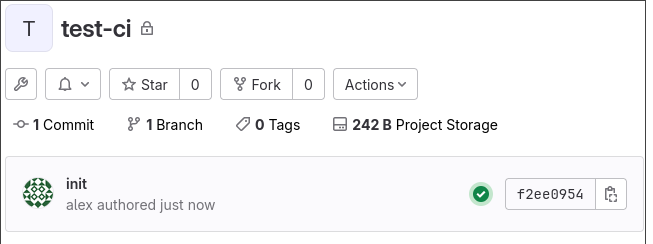 Перейдя по ней можно получить более подробное описание выполнения пайплайна, либо перейдя из левой панели в разделе Build:
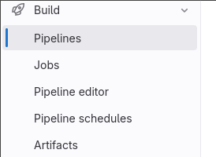
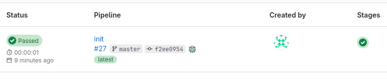
Перейдя по статусу Passed можно увидеть из каких шагов состоял пайплайн
и отдельно рассмотреть каждый шаг:
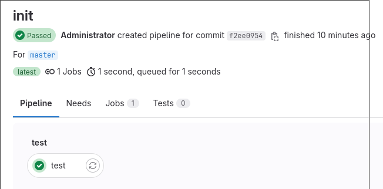
Перейдя в шаг test можно увидеть лог выполнения:
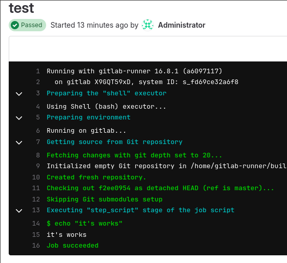
Test Stage
Хорошей практикой при разработке приложений является запуск тестов после пуша,
чтобы разработчик знал, что при изменении функционала тесты все также проходят.
Создадим простое приложение main.go и тест к нему main_test.go:
package main
import (
"log"
"net/http"
)
func Handler(w http.ResponseWriter, r *http.Request) {
w.WriteHeader(http.StatusOK)
w.Write([]byte("Hello!\n"))
}
func main() {
if err := http.ListenAndServe("0.0.0.0:8080", http.HandlerFunc(Handler));err != nil {
log.Fatal(err)
}
}
package main
import (
"net/http"
"net/http/httptest"
"testing"
)
func TestHandler(t *testing.T) {
req, err := http.NewRequest("GET", "/", nil)
if err != nil {
t.Fatal(err)
}
rec := httptest.NewRecorder()
http.HandlerFunc(Handler).ServeHTTP(rec, req)
if rec.Code != http.StatusOK {
t.Errorf(
"wrong status code: want %v got %v",
http.StatusOK, rec.Code,
)
}
if rec.Body.String() != "Hello!\n" {
t.Errorf("wrong body: got %s", rec.Body.String())
}
}
А также изменим скрипт в .gitlab-ci.yml:
stages:
- test
test:
stage: test
script:
- go test
И отправим в репозиторий, создав модуль:
$ go mod init test
go: creating new go.mod: module test
go: to add module requirements and sums:
go mod tidy
$ git add .
$ git commit -m 'add test ci'
[master cf6ec4d] add test ci
4 files changed, 50 insertions(+), 1 deletion(-)
create mode 100644 go.mod
create mode 100644 main.go
create mode 100644 main_test.go
$ git push
Enumerating objects: 8, done.
Counting objects: 100% (8/8), done.
Delta compression using up to 2 threads
Compressing objects: 100% (5/5), done.
Writing objects: 100% (6/6), 909 bytes | 454.00 KiB/s, done.
Total 6 (delta 0), reused 0 (delta 0), pack-reused 0
To localhost:root/test-ci.git
f2ee095..cf6ec4d master -> master
В результате выполнения задачи test нашего пайплайна увидим результат теста:
Running with gitlab-runner 16.8.1 (a6097117)
on gitlab X9GQT59xD, system ID: s_fd69ce32a6f8
Preparing the "shell" executor 00:00
Using Shell (bash) executor...
Preparing environment 00:00
Running on gitlab...
Getting source from Git repository 00:01
Fetching changes with git depth set to 20...
Reinitialized existing Git repository in /home/gitlab-runner/builds/X9GQT59xD/0/root/test-ci/.git/
Checking out cf6ec4d7 as detached HEAD (ref is master)...
Skipping Git submodules setup
Executing "step_script" stage of the job script 00:01
$ go test
PASS
ok test 0.004s
Job succeeded
Gitlab-ci позволяет производить различную обработку результатов
тестов. Попробуем добавить отображение процента покрытия,
добавив параметр coverage в .gitlab-ci.yml:
stages:
- test
test:
stage: test
script:
- go test -cover
coverage: '/coverage: (\d+.\d+)% of statements$/'
В данном скрипте утилита go test выведет информацию о покрытии,
а с помощью регулярного выражение в параметре coverage gitlab сможет
его считать и отобразить. Запушим данные изменения и посмотрим результат:
Executing "step_script" stage of the job script 00:01
$ go test -cover
PASS
test coverage: 50.0% of statements
ok test 0.004s
Job succeeded
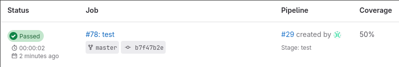
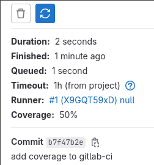
Build Stage
Добавим процесс сборки нашего приложения новым шагом в .gitlab-ci.yml:
stages:
- test
- build
test:
stage: test
script:
- go test -cover
coverage: '/coverage: (\d+.\d+)% of statements$/'
build:
stage: build
script:
- go build
И отправим в репозиторий, после чего у нас появится новая стадия: 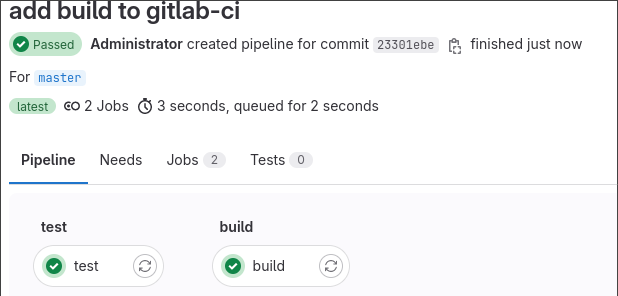
Но вероятно нам не потребуется делать сборку каждый коммит. Добавим правила, чтобы сборка выполнялась только при наличии тега, либо при ручном запуске:
stages:
- test
- build
test:
stage: test
script:
- go test -cover
coverage: '/coverage: (\d+.\d+)% of statements$/'
build:
stage: build
script:
- go build
rules:
- if: $CI_COMMIT_TAG
- when: manual
Теперь после пуша сборка не запустится сама: 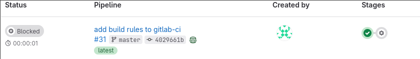
И ее можно будет запустить вручную в gitlab: 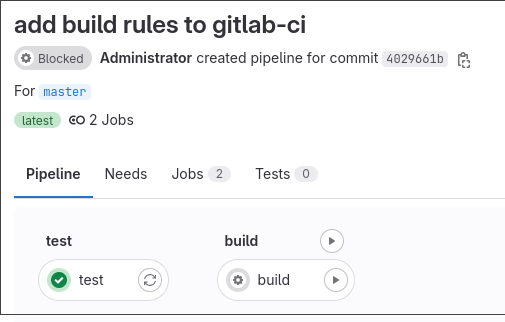
Работать с бинарными исполняемыми файлами напрямую после сборки не очень удобно,
переделаем процесс сборки, чтобы в результате получался docker образ. Добавим
в репозиторий Dockerfile:
FROM golang:1.22-alpine as builder
WORKDIR /usr/src
COPY . .
RUN go build -o /usr/src/app
FROM scratch
COPY --from=builder /usr/src/app /app
CMD ["/app"]
А скрипт сборки в .gitlab-ci.yml изменим следующим образом:
stages:
- test
- build
test:
stage: test
script:
- go test -cover
coverage: '/coverage: (\d+.\d+)% of statements$/'
build:
stage: build
script:
- docker build -t test:${CI_COMMIT_TAG:-$CI_COMMIT_SHORT_SHA} .
rules:
- if: $CI_COMMIT_TAG
- when: manual
Данный скрипт после сборки проставит образу тег соответствующий тегу в гит репозитории, либо, при его отсутствии, короткий хэш коммита.
После пуша запустим сборку вручную в gitlab:
Executing "step_script" stage of the job script 00:21
$ docker build -t test:${CI_COMMIT_TAG:-$CI_COMMIT_SHORT_SHA} .
DEPRECATED: The legacy builder is deprecated and will be removed in a future release.
Install the buildx component to build images with BuildKit:
https://docs.docker.com/go/buildx/
Step 1/7 : FROM golang:1.22-alpine as builder
---> a2742f74d90f
Step 2/7 : WORKDIR /usr/src
---> Using cache
---> b99e933ad4c2
Step 3/7 : COPY . .
---> faa8e15e14c1
Step 4/7 : RUN go build -o /usr/src/app
---> Running in 8cb8d80d21ac
Removing intermediate container 8cb8d80d21ac
---> d71d3c810c82
Step 5/7 : FROM scratch
--->
Step 6/7 : COPY --from=builder /usr/src/app /app
---> 5cf470e9d810
Step 7/7 : CMD ["/app"]
---> Running in 9a223691c8c6
Removing intermediate container 9a223691c8c6
---> 3a194e61f59b
Successfully built 3a194e61f59b
Successfully tagged test:523f63cb
Job succeeded
На виртуальной машине можно увидеть собранный образ:
$ docker images
REPOSITORY TAG IMAGE ID CREATED SIZE
test 523f63cb 3a194e61f59b 5 minutes ago 6.95MB
golang 1.22-alpine a2742f74d90f 3 weeks ago 230MB
Deploy Stage
Test
После сборки возможно нам захочется произвести деплой приложения в тестовую среду, добавим стадию деплоя описав запуск и остановку в тестовой среде:
stages:
- test
- build
- deploy
test:
stage: test
script:
- go test -cover
coverage: '/coverage: (\d+.\d+)% of statements$/'
build:
stage: build
script:
- docker build -t test:${CI_COMMIT_TAG:-$CI_COMMIT_SHORT_SHA} .
rules:
- if: $CI_COMMIT_TAG
- when: manual
deploy_test:
stage: deploy
script:
- docker run -p 8000:8080 -d --name test test:${CI_COMMIT_TAG:-$CI_COMMIT_SHORT_SHA}
environment:
name: test
on_stop: stop_test
rules:
- when: manual
stop_test:
stage: deploy
script:
- docker rm -f test
environment:
name: test
action: stop
rules:
- when: manual
После чего у нас появится новая стадия в пайплайне:
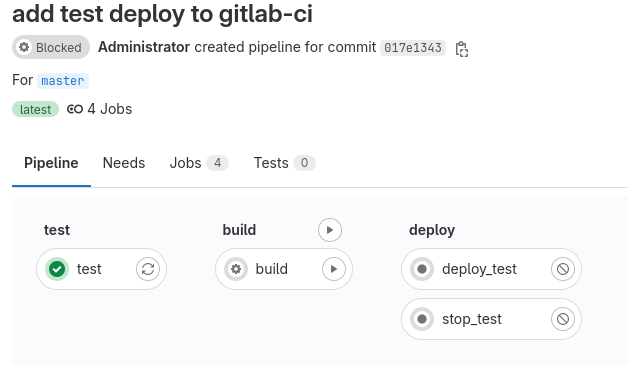
Запустим сборку и деплой:
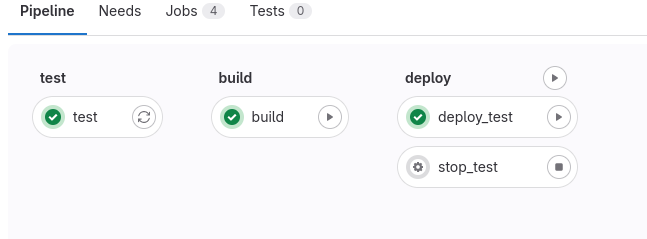
После чего на сервере увидим результат:
$ docker ps
CONTAINER ID IMAGE COMMAND CREATED STATUS PORTS NAMES
6b6e6c9786fc test:017e1343 "/app" 51 seconds ago Up 50 seconds 0.0.0.0:8000->8080/tcp, :::8000->8080/tcp test
$ curl localhost:8000
Hello!
Prod
Также можем добавить деплой в продуктивную среду в этой же стадии, но сделаем обязательными правилами наличие тега с ручным запуском:
stages:
- test
- build
- deploy
test:
stage: test
script:
- go test -cover
coverage: '/coverage: (\d+.\d+)% of statements$/'
build:
stage: build
script:
- docker build -t test:${CI_COMMIT_TAG:-$CI_COMMIT_SHORT_SHA} .
rules:
- if: $CI_COMMIT_TAG
- when: manual
deploy_test:
stage: deploy
script:
- docker run -p 8000:8080 -d --name test test:${CI_COMMIT_TAG:-$CI_COMMIT_SHORT_SHA}
environment:
name: test
on_stop: stop_test
rules:
- when: manual
stop_test:
stage: deploy
script:
- docker rm -f test
environment:
name: test
action: stop
rules:
- when: manual
deploy_production:
stage: deploy
script:
- docker run -p 9000:8080 -d --name prod test:$CI_COMMIT_TAG
environment:
name: production
on_stop: stop_production
rules:
- if: $CI_COMMIT_TAG
when: manual
stop_production:
stage: deploy
script:
- docker rm -f prod
environment:
name: production
action: stop
rules:
- if: $CI_COMMIT_TAG
when: manual
На текущий момент в пайплайне не появится возможность деплоя в продуктивную среду, так как необходимо иметь тег:
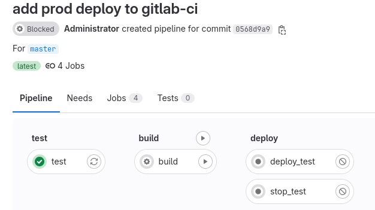
Добавим и запушим тег:
$ git tag v0.0.1
$ git push origin v0.0.1
Total 0 (delta 0), reused 0 (delta 0), pack-reused 0
To localhost:root/test-ci.git
* [new tag] v0.0.1 -> v0.0.1
После чего появится новый пайплайн:
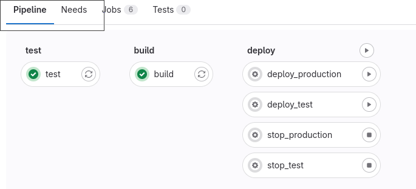
Как видно сборка запустилась автоматически при наличии тега, запустим теперь деплой в прод и после проверим результат:
$ docker ps
CONTAINER ID IMAGE COMMAND CREATED STATUS PORTS NAMES
0929d8d7b92a test:v0.0.1 "/app" About a minute ago Up About a minute 0.0.0.0:9000->8080/tcp, :::9000->8080/tcp prod
6b6e6c9786fc test:017e1343 "/app" 32 minutes ago Up 32 minutes 0.0.0.0:8000->8080/tcp, :::8000->8080/tcp test
$ curl localhost:9000
Hello!
Также управление средами развертки можно управлять со страницы Operate/Environments:
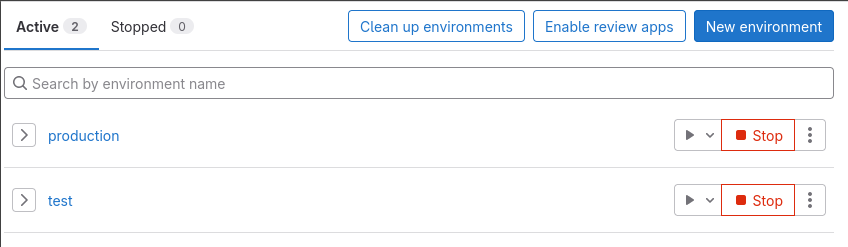
Таким образом с помощью пайплайна gitlab-ci можно построить удобный процесс
разработки, тестирования и развертывания.